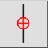
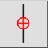
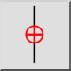
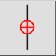

Restreindre verticalement
Barre d'outil / icône :
 

Menu : Accrochage > Restreindre verticalement
Raccourci : E, V
Commandes : restrictvertical | ev
Ceci est une traduction automatique.
Barre d'outil / icône :
 

Menu : Accrochage > Restreindre verticalement
Raccourci : E, V
Commandes : restrictvertical | ev
Limite le curseur verticalement à la même position X que le point zéro relatif.